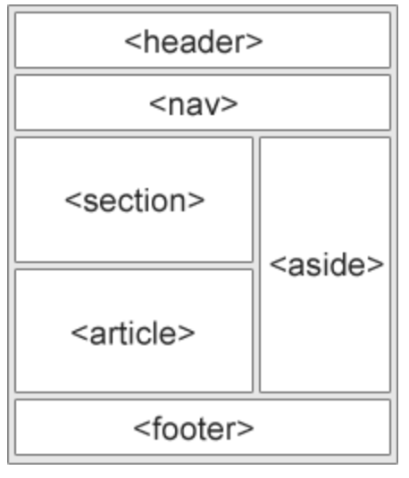

Aufbau von HTML


In Bezug auf HTML unterscheiden sich die verschiedenen Browser in der Art und Weise, wie sie HTML interpretieren und rendern.
Einige Browser sind möglicherweise schneller oder langsamer in der Darstellung von HTML-Inhalten,
während andere möglicherweise besser mit bestimmten HTML-Tags und -Attributen umgehen können.
In HTML gibt es einige semantische Elemente, die verwendet werden können, um verschiedene Teile einer Webseite zu definieren:
